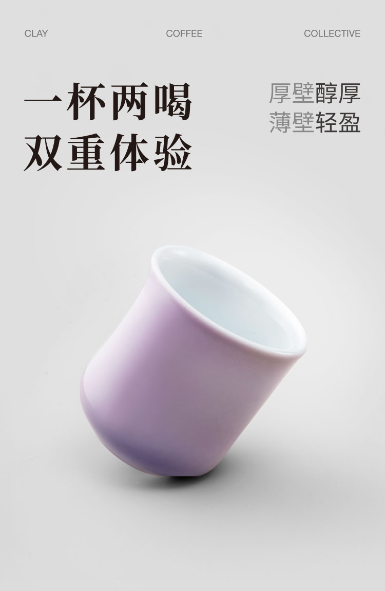
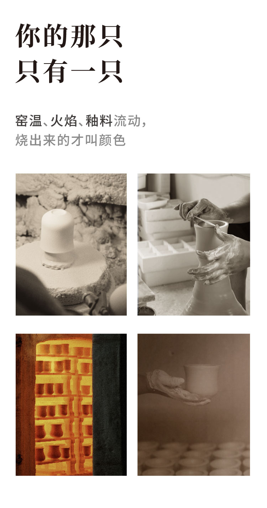
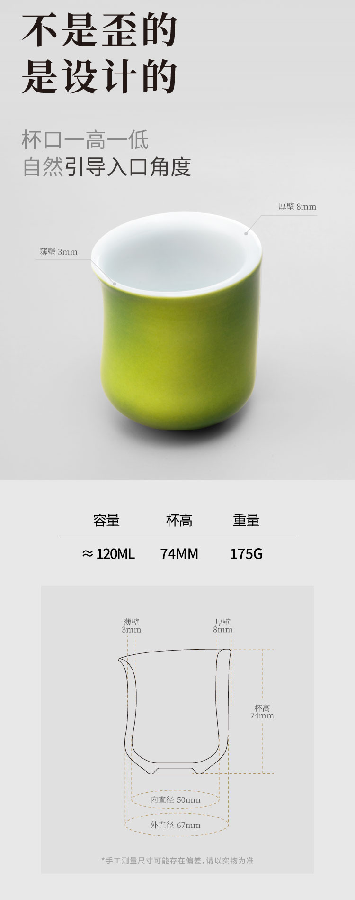

CCCLAY · 无限倾角杯多色版
图已经
够好看了。
现在要回答：
为什么值得买？
我把杯型、厚薄、120ml、手工釉色和品牌背书拆成购买问题，再排成摄影和设计可以直接执行的 brief。最终落成 10 张主图和 9 屏详情页。



合作反馈
先认可我能把思路和卖点讲清，再邀请我继续参与三个重点新品。
合作开始前，对方看过我之前做的页面，认可我能把思路和卖点讲清。样板页完成后，又邀请我继续参与三个重点新品。这不是销量证明，但能说明对方愿意继续信任我的判断和推进方式。
起点
先把一个太大的需求收小
CCCLAY 有景德镇工艺、专利杯型、手工釉色，也有精品咖啡圈的专业背书。产品不缺内容，图片也不难看。问题出在网上：一个第一次进店的人，未必能马上明白这只杯为什么不同、适合谁、贵在哪里。
最初的需求接近“电商全渠道运营”：天猫、小红书、投流、私域、达人和日常内容都在里面。对外部顾问来说，这个口子一旦接住，很快就会变成半个全职运营。
所以我没有先接整店，而是建议先拿一个核心 SKU 做样板。先证明一页商品页能不能被讲清楚。
工作
我主要做了四件事
把产品差异翻成购买问题
“无限倾角”不是一个名字。用户真正会问的是：它是不是歪了？两边厚薄不一样，喝起来有什么区别？
把问题排成页面顺序
先给继续看的理由，再解除误解；接着讲怎么用、怎么选，最后补背书和买前须知。
让摄影为页面服务
我先定义每组图要证明什么。首轮画面质感不够时，只补拍最关键的一组，不让整个项目推倒重来。
让设计师拿到就能做
每一屏用什么图、写什么、留什么标注空间、哪些事实还待确认，都放进同一份 brief。
视觉证据
九屏不是九张海报。它是一条说服链。
每一屏只回答一个问题。先看说服链最前面的 3 屏，其余 4 屏可以按需展开。涉及第三方背书和售后时效的 2 屏暂不公开；画面按 2026 年项目终版展示，不代表当前 SKU、热销状态或产品线信息。

展开查看其余 4 个公开页面 收起其余 4 个公开页面
合作边界
合作前、合作中、合作后，分别是谁做什么
边界不是为了少做事。它让每个人知道自己该对哪一段结果负责。
先做样板，不接成代运营
把全渠道需求收成一个核心商品页。先验证产品判断、页面逻辑和协作方式，再谈下一步。
我负责判断和接线
我负责卖点、屏幕顺序、摄影需求、页面文案、设计 brief、集中反馈和终稿验收。品牌方确认产品事实、正式名称和最终取舍；摄影师与设计师完成具体拍摄和画面执行。
范围可以扩大，责任不能变糊
后续合作延伸到三个重点新品的项目拆解与推进。我负责路径、节奏和验收，不替内部岗位做生产、拍摄、设计、上架和日常运营，也不承诺 GMV 或爆款。
核心价值
我主要帮到的，是把三种语言接在一起
创始人知道杯型、工艺和釉色为什么重要。
买家只想知道：哪里不同，适不适合我，为什么值。
摄影师和设计师需要知道：拍什么、放哪里、怎样算完成。
如果这三种语言不在一条线上，再好的产品也会在页面上走样。
下一步
你的产品也有东西，却一直讲不清为什么值得买吗？
第一次联系，请发我 3 样：产品链接或材料、项目现在到哪一步、最卡的一件事。我会先判断问题是否适合我，以及更适合从诊断、页面 brief 还是项目推进开始。
第一次沟通只做匹配判断，不在微信里展开完整方案。确认合作后，再进入付费诊断或具体项目。